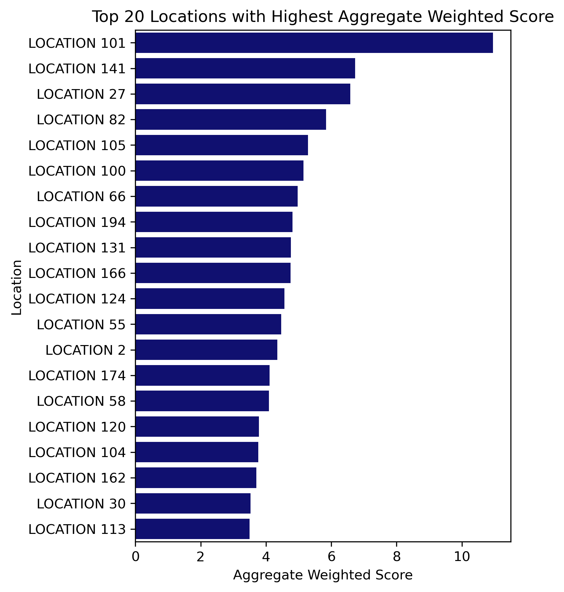
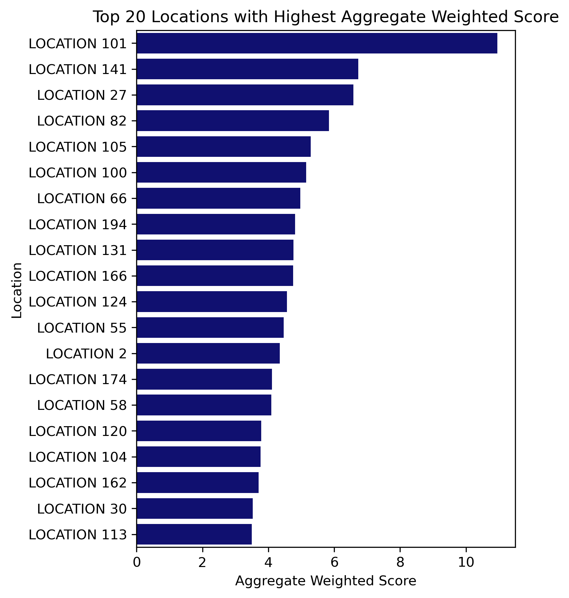

Prioritized Location List
This is the list of locations sorted based on a higher aggregated weighted score at that location. A higher aggregated weighted score indicates higher erroneous transactions at that location. The list shows the top 20 locations along with their aggregated weighted score and count of users making erroneous transactions. This list highlights the locations that need improvement.
Column names and description:
- LOCATION: LOCATION ID
- AGG_WT_ SCORE: Aggregated weighted score of a location.
- USER_COUNT: Count of users making erroneous transactions at the location.
Bar chart for prioritized location list and list showing prioritized locations
 
